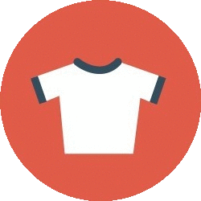
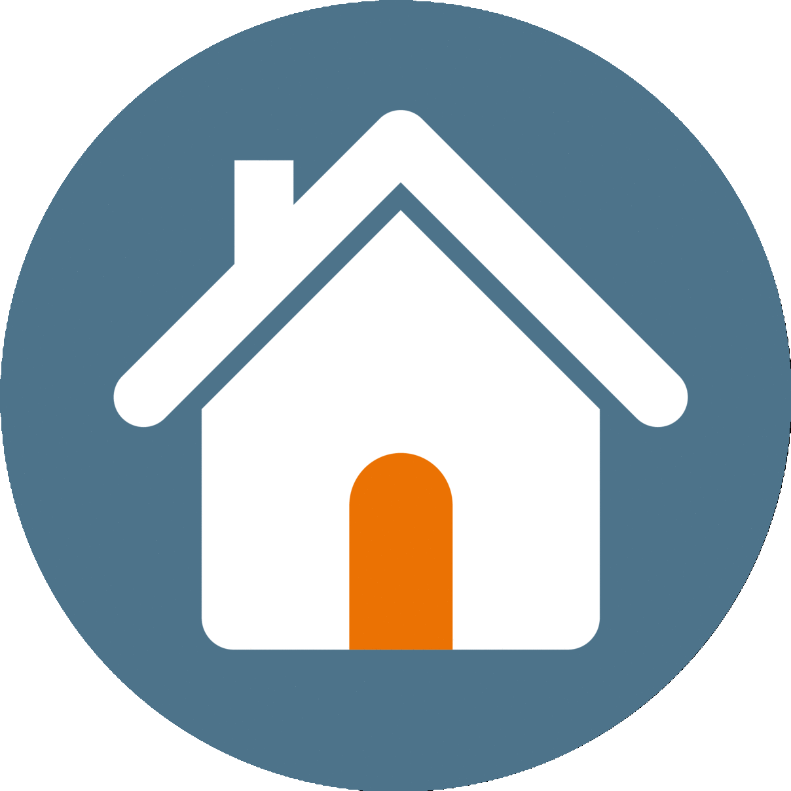

Map

Clothing Shelters


Homeless Shelters
Built by the team at Coding 4 Impact, NYC Connector is a project which allows users to easily find and locate places near them where they can volunteer at or donate to, such as soup kitchens, food pantries, SNAP centers, senior centers, food scrap drop-off sites, as well as clothing and homeless shelters. Enter an address or zip code and select the appropriate filters, and resources nearby will be displayed on the map. Click on a pinpoint marker to view information about the resource. It's as easy as that!
Coding 4 Impact is a student-led club at Hunter College High School, with the goal of developing software and web applications that positively impact the world.